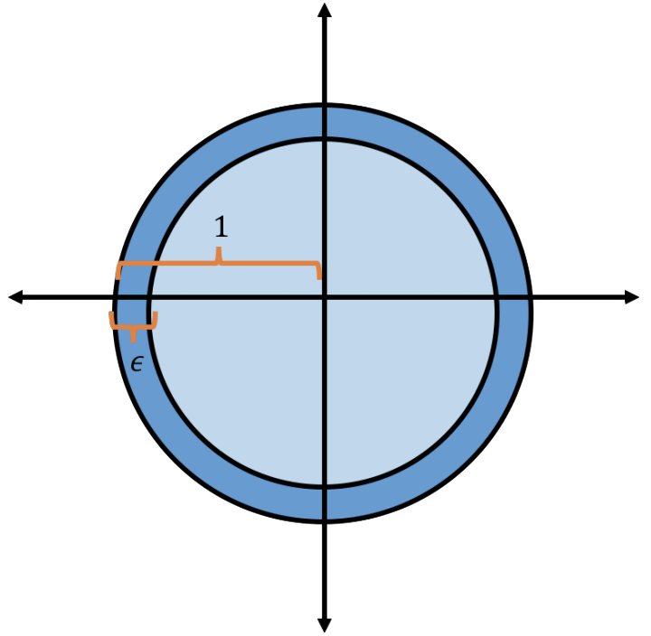
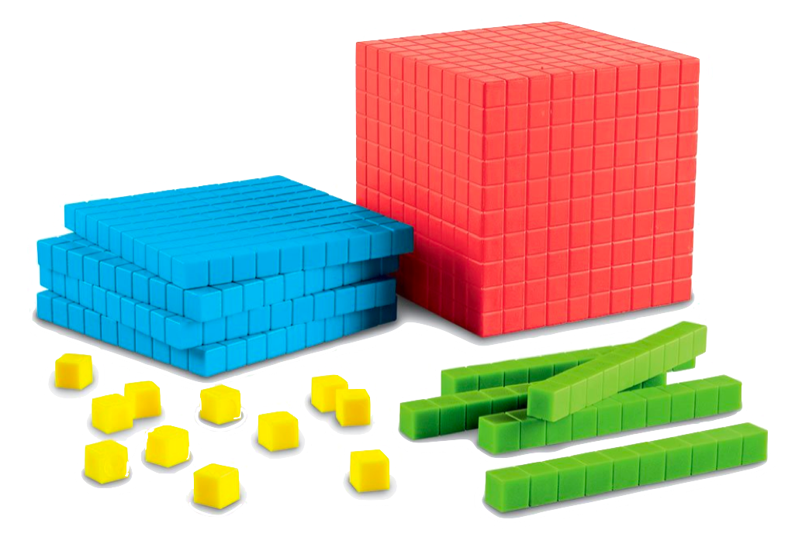
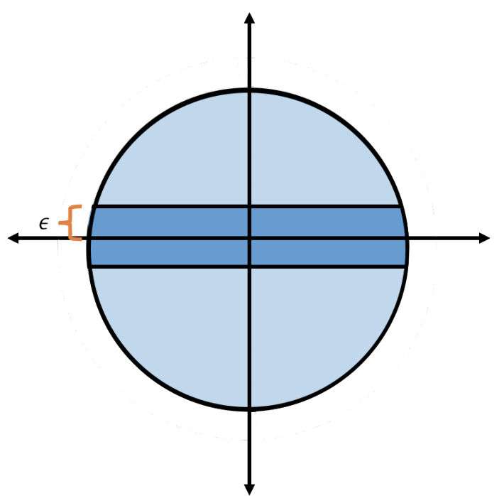
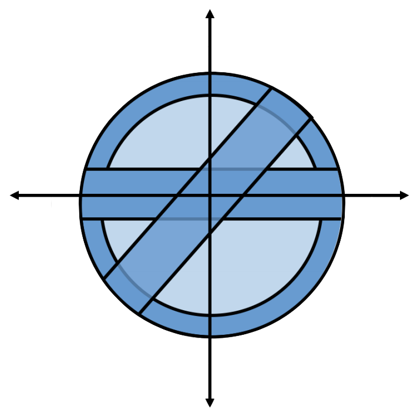
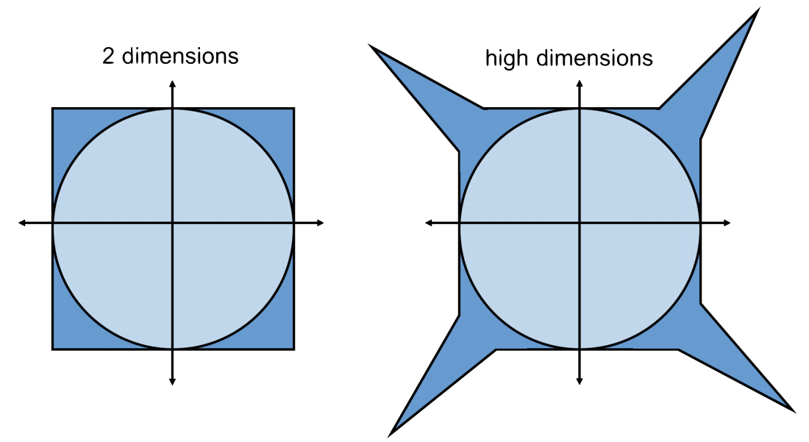

High-Dimensional Geometry
A unifying theme of this course is how we deal with data in high dimensions. We’ll see how to use:
Locality sensitive hashing to find similar items in high dimensions.
Low-rank approximations (like singular value decomposition) to find and visualize low-dimensional structure.
High-dimensional representations of large graphs.
We often visualize data and algorithms in one, two, or three dimensions. Today, we’ll prove that high-dimensional space looks fundamentally different from low-dimensional space. In particular, we’ll see how our understanding and intuition from low-dimensional space quickly breaks in higher dimensions. After establishing the weirdness of high-dimensional space, we’ll happily ignore the weirdness and see how to reduce the dimension of high-dimensional data.
High-Dimensional Geometry is Weird
Recall the inner product between two \(d\)-dimensional vectors \(\mathbf{x}, \mathbf{y} \in \mathbb{R}^d\). We’ll use bolded notation like \(\mathbf{x}\) or \(\mathbf{x}_j\) to denote vectors and non-bolded notation like \(x[i]\) or \(x_i\) to denote scalars. Depending on the context, we’ll use \(x[i]\) or \(x_i\) to refer to the \(i\)th entry of the vector \(\mathbf{x}\). We can write the inner product in several equivalent ways: \[\begin{align} \langle \mathbf{x}, \mathbf{y} \rangle = \mathbf{x}^\top \mathbf{y} = \mathbf{y}^\top \mathbf{x} = \sum_{i=1}^d x_i y_i. \end{align}\] When we take the inner product between a vector and itself, we get the squared norm: \[\begin{align} \langle \mathbf{x}, \mathbf{x} \rangle = \mathbf{x}^\top \mathbf{x} = \sum_{i=1}^d x_i^2 = \|\mathbf{x}\|_2^2. \end{align}\] As we know from linear algebra, the inner product is a measure of how similar two vectors are. In particular, we can write \[\begin{align} \langle \mathbf{x}, \mathbf{y} \rangle = \|\mathbf{x}\|_2 \|\mathbf{y}\|_2 \cos \theta, \end{align}\] where \(\theta\) is the angle between \(\mathbf{x}\) and \(\mathbf{y}\). When \(\mathbf{x}\) and \(\mathbf{y}\) are both unit vectors (their squared norm is 1), the inner product is just the cosine of the angle between them. When \(\mathbf{x}\) and \(\mathbf{y}\) are orthogonal, the angle between them is \(\pi/2\) and their inner product is 0.
Orthogonal Vectors
Let’s start off with a simple question. What is the size of the largest set of mutually orthogonal unit vectors in \(d\) dimensions? In other words, what is the largest value of \(t\) so that we can have a set of vectors \(\mathbf{x}_1, \ldots, \mathbf{x}_t\) such that \(\langle \mathbf{x}_i, \mathbf{x}_j \rangle = 0\) for all \(i \neq j\)?
The answer is \(d\). One example of such a set of vectors is the standard basis vectors: \(\mathbf{x}_i\) has a 1 in the \(i\)th entry and 0 everywhere else.
We can also see that \(d\) is the largest possible size of such a set by contradiction. Suppose we have a set of more than \(d\) orthogonal unit vectors. Since we have \(d\) orthogonal vectors in \(d\) dimensions, we know that they span the entire space. Then, we can write the \(d+1\)th vector as \[\begin{align} \mathbf{x}_{d+1} = \sum_{i=1}^d \alpha_i \mathbf{x}_i \end{align}\] for some coefficients \(\alpha_i\) where there is at least one \(j\) such that \(\alpha_j \neq 0\). In words, we can write \(\mathbf{x}_{d+1}\) as the span of the first \(d\) vectors. Taking the inner product of both sides with \(\mathbf{x}_j\) gives \[\begin{align} \langle \mathbf{x}_{d+1}, \mathbf{x}_j \rangle = \sum_{i=1}^d \alpha_i \langle \mathbf{x}_i, \mathbf{x}_j \rangle = \alpha_j. \end{align}\] We have a contradiction since we assumed \(\langle \mathbf{x}_{d+1}, \mathbf{x}_j \rangle = 0\) for all \(j \in [d]\).
Now let’s pose a related question. What is the size of the largest set of nearly orthogonal unit vectors in \(d\) dimensions? In other words, what is the largest value of \(t\) so that we can have a set of vectors \(\mathbf{x}_1, \ldots, \mathbf{x}_t\) such that \(|\langle \mathbf{x}_i, \mathbf{x}_j \rangle| \leq \epsilon\) for all \(i \neq j\)?
We may expect that the answer is at least close to \(d\). But, it turns out, there is a set with an exponential number of nearly orthogonal vectors.
Probabilistic Method
We’ll prove this with the probabilistic method. Let \(t=2^{c \epsilon^2 d}\) for some constant \(c\). We’ll construct a random process that generates random vectors \(\mathbf{x}_1, \ldots, \mathbf{x}_t\) that are unlikely to have large inner products. Then we’ll show that, with non-zero probability, the inner product \(|\mathbf{x}_i^\top \mathbf{x}_j| \leq \epsilon\) for all \(i \neq j\). We can then conclude that there must exist some set of \(t\) unit vectors with all inner products less than \(\epsilon\).
The random vectors we’ll consider each have entries that are independently \(\frac1{\sqrt{d}}\) and \(-\frac1{\sqrt{d}}\) with equal probability. Then we can make several observations. The vectors have unit norm: \[\begin{align} \|\mathbf{x}_i\|_2^2 = \sum_{j=1}^d x_i[j]^2 = \sum_{j=1}^d \frac1{d} = 1. \end{align}\] The expected inner product between vectors \(i\neq j\) is 0: \[\begin{align} \mathbb{E}[\mathbf{x}_i^\top \mathbf{x}_j] = \sum_{k=1}^d \mathbb{E}\left[x_i[k] x_j[k]\right] = \sum_{k=1}^d \mathbb{E}[x_i[k]] \mathbb{E}[x_j[k]] = 0. \end{align}\] The penultimate equality is because each entry is independent. The last equality is because the expected value of each entry is 0. The next observation we can make is that the variance of the inner product is \(\frac1{d}\): \[\begin{align} \textrm{Var}[\mathbf{x}_i^\top \mathbf{x}_j] &= \sum_{k=1}^d \textrm{Var}[x_i[k] x_j[k]]\\ &= \sum_{k=1}^d \mathbb{E}[x_i[k]^2 x_j[k]^2] - \mathbb{E}[x_i[k] x_j[k]]^2 \\ &= \sum_{k=1}^d \frac1{d^2} - 0^2 = \frac1{d}. \end{align}\] The first equality is by linearity of variance. The third equality is because \(x_i[k]^2 = \frac1{d}\).
Define a random variable \(Z = \mathbf{x}_i^\top \mathbf{x}_j = \sum_{k=1}^d C_k\) where each \(C_k\) is \(\frac1{d}\) or \(-\frac1{d}\) with equal probability. Since \(Z\) is a sum of many i.i.d. random variables, we expect \(Z\) to approximate a Gaussian. If \(Z\) were a Gaussian, then \[\begin{align} \Pr\left( | Z | \geq \alpha \frac1{\sqrt{d}}\right) = \Pr\left( | Z - \mathbb{E}[Z] | \geq \alpha \sigma\right) \leq O(e^{-\alpha^2}). \end{align}\] Then we’d be done by setting \(\alpha = \epsilon \sqrt{d}\).
But, since \(Z\) only approximates a Gaussian, we need to be a bit more careful. We’d like to apply Chernoff’s bound. However, (our version of) Chernoff’s bound requires that the random variable be binary. With some clever algebra, we can write \(Z\) as a sum of binary random variables. \[\begin{align} Z &= \sum_{k=1}^d C_k = \frac2{d} \sum_{k=1}^d \frac{d}{2} C_k \\ &= \frac2{d} \sum_{k=1}^d \left( -\frac1{2} + B_k \right) \\ &= \frac2{d} \left( - \frac{d}{2} + \sum_{k=1}^d B_k \right). \end{align}\] Here, we used the fact that \(\frac{d}{2} C_k\) is \(\frac1{2}\) or \(-\frac1{2}\) with equal probability. Let \(B_k\) be a binary random variable that is 1 or 0 with equal probability. Then \(\frac{d}{2} C_k = - \frac12 + B_k\).
We’re interested in the event that \(Z > \epsilon\). With our expression for \(Z\), this is equivalent to \[\begin{align} \sum_{k=1}^d B_k > \frac{d}{2} + \frac{d}{2} \epsilon. \end{align}\] Similarly, the event that \(Z < -\epsilon\) is equivalent to \[\begin{align} \sum_{k=1}^d B_k < \frac{d}{2} - \frac{d}{2} \epsilon. \end{align}\] Let \(B = \sum_{k=1}^d B_k\). Notice that \(\mathbb{E}[B] = \frac{d}{2}\). Putting these last three observations together, we have that \[\begin{align} \Pr( | Z | \geq \epsilon) &= \Pr( B \geq (1+\epsilon) \mathbb{E}[B] ) + \Pr(B \leq (1-\epsilon) \mathbb{E}[B] ) \\ &= \Pr(| B - \mathbb{E}[B] | \geq \epsilon \mathbb{E}[B]). \end{align}\] Notice this is exactly in the right form for Chernoff’s bound. Then Chernoff’s bound gives \[\begin{align} \Pr( | Z | \geq \epsilon) \leq 2 \exp\left(\frac{-\epsilon^2 \mathbb{E}[B]}{3}\right) = 2 \exp\left(\frac{-\epsilon^2 d}{6}\right). \end{align}\]
By the union bound, the probability that any pair of vectors has an inner product larger than \(\epsilon\) is at most the number of pairs times the probability that a particular pair has an inner product larger than \(\epsilon\). That is, \[\begin{align} \Pr( \exists i \neq j : | \mathbf{x}_i^\top \mathbf{x}_j | \geq \epsilon) \leq \binom{t}{2} 2 \exp\left(\frac{-\epsilon^2 d}{6}\right). \end{align}\] We want to choose \(t\) so that the probability that any pair of vectors has an inner product larger than \(\epsilon\) is strictly less than 1. Solving for \(t\) we find \[\begin{align} \binom{t}{2} 2 \exp\left(\frac{-\epsilon^2 d}{6}\right) < 1 &\Leftrightarrow t(t-1) < \exp\left( \frac{\epsilon^2d}{6} \right) \\ &\Leftarrow t = \exp\left( \frac{\epsilon^2d}{12} \right) = 2^{c \epsilon^2 d} \end{align}\] for \(c = \frac{\log_2(e)}{12} \approx 0.12\). Since the probability that any pair of vectors has an inner product larger than \(\epsilon\) is strictly less than 1, there must exist some set of \(t\) vectors with all inner products less than \(\epsilon\).
A corollary of the proof that we just saw is that random vectors tend to be far apart in high dimensions. This means that, if our data distribution is random, we typically need an exponential amount of data to learn a pattern. Nonetheless, we often get away with a much smaller amount of data in practice. The reason is that there generally exists a lower dimensional structure in our data that we can learn. For example, data may lie in a low-dimensional subspace (or it does so after a transformation). Alternatively, the pattern we’re learning can come from a specific class of functions that we can learn with a small amount of data.
Before we discuss how to learn low-dimensional structure, let’s see how high-dimensional geometry is so different from what our intuition tells us.
Where Points Live
Let \(\mathcal{B}_d(R)\) be the ball in \(d\) dimensions with radius \(R\). Formally, \[\begin{align} \mathcal{B}_d(R) = \{ \mathbf{x} \in \mathbb{R}^d : \|\mathbf{x}\|_2 \leq R \}. \end{align}\] We’ll refer to the unit ball simply as \(\mathcal{B}_d\). What fraction of the volume of the unit ball \(\mathcal{B}_d\) falls within \(\epsilon\) of its surface?

Well we know that the volume of a radius \(R\) ball in \(d\) dimensions is \(\frac{\pi^{d/2}}{(d/2)!} R^d\). (Here, we assume that \(d\) is even but there is a similar expression for odd \(d\).) Then the fraction of the volume within \(\epsilon\) of the surface is \[\begin{align} \frac{\textrm{Vol}(\mathcal{B}_d) - \textrm{Vol}(\mathcal{B}_d(1-\epsilon))}{\textrm{Vol}(\mathcal{B}_d)} &= 1- \frac{\frac{\pi^{d/2}}{(d/2)!} (1-\epsilon)^d}{\frac{\pi^{d/2}}{(d/2)!} 1^d} = 1 - (1-\epsilon)^d \\ &= 1- \left((1-\epsilon)^{1/\epsilon}\right)^{\epsilon d} \approx 1 - \frac1{e^{\epsilon d}}. \end{align}\] So all but a \(\frac1{2^{c \epsilon d}}\) fraction of the volume of the unit ball is within \(\epsilon\) of its surface for a constant \(c\).
We may wonder about how the unit ball compares to other high-dimensional shapes. In fact, by the isoperimetric inequality, the unit ball has the minimum ratio between the surface area and volume of any shape. If we randomly sample points from any high-dimensional shape, nearly all will fall near its surface. One interpretation of this fact is that nearly all points are outliers. Let’s see this intuition for cubes.

Consider the cubes with side length \(10\) in the figure above. In one dimension, the ratio of the cubes on the surface to the total number of cubes is \(\frac{2}{10}=.2\). In two dimensions, the ratio is \(\frac{10^2 - 8^2}{10^2} = .36\). In three dimensions, the ratio is \(\frac{10^3 - 8^3}{10^3} = .488\). As we increase the dimension, the ratio approaches 1.
Now let’s consider a slightly different question about the sphere. What fraction of the volume of the unit ball falls within \(\epsilon\) of its equator?

Let \(S\) be the set of points within \(\epsilon\) of the equator. Formally, \[\begin{align} S = \{ \mathbf{x} \in \mathcal{B}_d : |x_1| \leq \epsilon \}. \end{align}\] Surprisingly, we’ll show that all but a small fraction of the volume of the unit ball falls within \(\epsilon\) of its equator. By the symmetry of the unit ball, this is true for any equator.
So:
We know that all but a \(\left(\frac1{2}\right)^{c \epsilon d}\) fraction of the volume of the unit ball is within \(\epsilon\) of its surface and
We (are about to) know that all but a \(\left(\frac1{2}\right)^{c \epsilon^2 d}\) fraction of the volume of the unit ball is within \(\epsilon\) of any equator for some constant \(c\).

Claim: All but a \(\left(\frac1{2}\right)^{c \epsilon^2 d}\) fraction of the volume of the unit ball is within \(\epsilon\) of any equator for some constant \(c\).
Clearly, the high-dimensional unit ball looks nothing like the circle!
Proof
Let’s show our claim that all but a small fraction of the volume of the unit ball falls within \(\epsilon\) of its equator. We can show this probabilistically by drawing random points from the unit ball. Formally, we’ll show that if we draw a random point \(\mathbf{x}\) from the unit ball, then \(|x_1| \leq \epsilon\) with large probability.
Generating a random vector \(\mathbf{x}\) from the interior of the unit ball is quite difficult. We’ll instead consider a random vector \(\mathbf{w}\) from the surface of the unit ball. Given a random vector \(\mathbf{x}\) from the unit ball, we can put it onto the surface of the unit ball by normalizing it: define \(\mathbf{w} = \frac{\mathbf{x}}{\|\mathbf{x}\|_2}\). Because \(\|\mathbf{x}\|_2 \leq 1\), we know \[\begin{align} \Pr( |x_1| \leq \epsilon) \geq \Pr( |w_1| \leq \epsilon). \end{align}\] So it suffices to show that \(|w_1| \leq \epsilon\) with probability at least \(1-\frac{1}{2^{c \epsilon^2 d}}\). Let’s consider how to generate a random vector \(\mathbf{w}\) from the surface of the unit ball.
Let \(\mathbf{g} \in \mathbb{R}^d\) be a random Gaussian vector with each entry drawn from the standard normal distribution \(\mathcal{N}(\mathbf{0},\mathbf{I})\). Then \(\mathbf{w} = \frac{\mathbf{g}}{\|\mathbf{g}\|_2}\) is uniformly distributed on the surface of the unit ball. To see why, consider a probability density function \(p: \mathbb{R}^d \rightarrow \mathbb{R}\), with two key properties:
Independence: The distributions of the individual coordinates are independent.
Rotational Invariance: The joint density depends only on the distance from the origin i.e., \(p(\mathbf{x})\) is a function of \(\|\mathbf{x}\|_2\).
These two properties are enough to show that \(p = \exp( -\|\mathbf{w}\|_2^2)\), at least up to constants. For a phenomenal explanation of this derivation (often called the Herschel-Maxwell derivation), check out this 3Blue1Brown video.
In order to analyze \(\mathbf{w}\), we’ll first analyze \(\mathbf{g}\).
The expectation of \(\|\mathbf{g}\|_2^2\) is d: \[\begin{align}\mathbb{E}[ \|\mathbf{g}\|_2^2 ] = \sum_{i=1}^d \mathbb{E}[g_i^2] = \sum_{i=1}^d \textrm{Var}(g_i) = d. \end{align}\]
The second equality is because each entry has mean 0 and variance 1. We will use the following inequality: \[\begin{align} \Pr \left(\| \mathbf{g} \|_2^2 \leq \frac{d}{2}\right)\leq \frac{1}{2^{c d}} \end{align}\] for some constant \(c\). The proof uses a concentration inequality for Chi-squared variables and is left as an exercise. To bound the probability that \(|w_1| \leq \epsilon\), we will define two events:
The norm of the Gaussian vector is sufficiently large: \(\| \mathbf{g} \|_2 \geq \sqrt{d/2}\).
The first coordinate is sufficiently small: \(|g_1| \leq \epsilon \sqrt{d/2}\).
Let \(\mathcal{C}_d\) be the \(d\)-dimensional unit cube. Formally, \[\begin{align} \mathcal{C}_d = \{ \mathbf{x} \in \mathbb{R}^d : |x_i| \leq 1 \textrm{ for all } i \in [d] \}. \end{align}\] In two dimensions, the cube is pretty similar to the ball.
But in high dimensions, the cube is very different from the ball. The volume of the unit cube is \(2^d\) while the volume of the unit ball is \(\frac{\pi^{d/2}}{(d/2)!}\). The ratio of the volume of the unit cube to the unit ball is \[\begin{align} \frac{\textrm{Vol}(\mathcal{C}_d)}{\textrm{Vol}(\mathcal{B}_d)} = \frac{2^d (d/2)!}{\pi^{d/2}} \approx \sqrt{d}^d. \end{align}\] The cube has way way more volume!
There are some other ways to see that these shapes are very different. We have \[\begin{align} \max_{\mathbf{x} \in \mathcal{B}_d} \|\mathbf{x}\|_2^2 = 1 \hspace{1em} \textrm{ but } \hspace{1em} \max_{\mathbf{x} \in \mathcal{C}_d} \|\mathbf{x}\|_2^2 = d. \end{align}\] We may think that such vectors are extreme. However, we have \[\begin{align} \mathbb{E}_{\mathbf{x} \sim \mathcal{B}_d} [\|\mathbf{x}\|_2^2 ]\leq 1 \end{align}\] but \[\begin{align} \mathbb{E}_{\mathbf{x} \sim \mathcal{C}_d} [\|\mathbf{x}\|_2^2 ] = \sum_{i=1}^d \mathbb{E}_{x_i \sim \mathcal{U}(-1,1)}[ x_i^2] = \sum_{i=1}^d \frac13 = \frac{d}{3}. \end{align}\] For the penultimate equality, we used the following fact about the uniform distribution on \([-1,1]\): The expectation of \(x^2\) for \(x \sim \mathcal{U}(-1,1)\) is \[\begin{align} \int_{x=-1}^1 x^2 \frac1{2} dx = \frac13. \end{align}\]

Together, we have painted the following picture: Almost all of the volume of the unit cube falls in its corners and these corners lie far outside the unit ball.
Check out the Quanta Magazine article The Journey to Define Dimension for another fun example comparing cubes and balls.
Despite all this warning that low-dimensional space looks nothing like high-dimensional space, we’ll next learn about how to compress high-dimensional vectors into low-dimensional vectors.
We will be very careful not to compress the vectors too far. An extremely simple method known as the Johnson-Lindenstrauss random projection pushes right up to the edge of how much compression is possible.